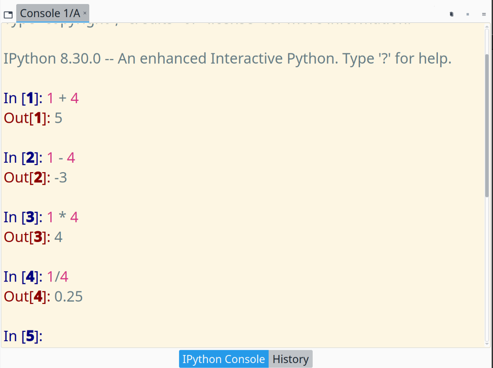
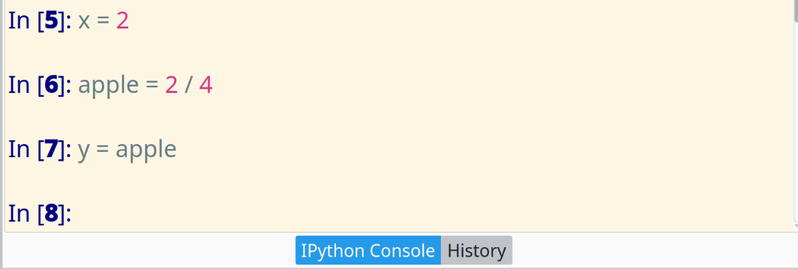
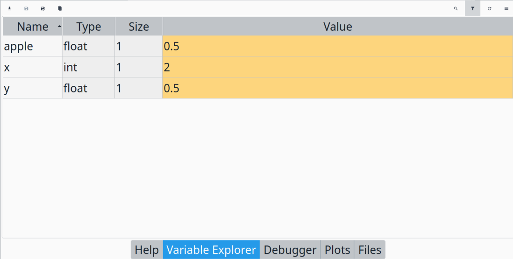
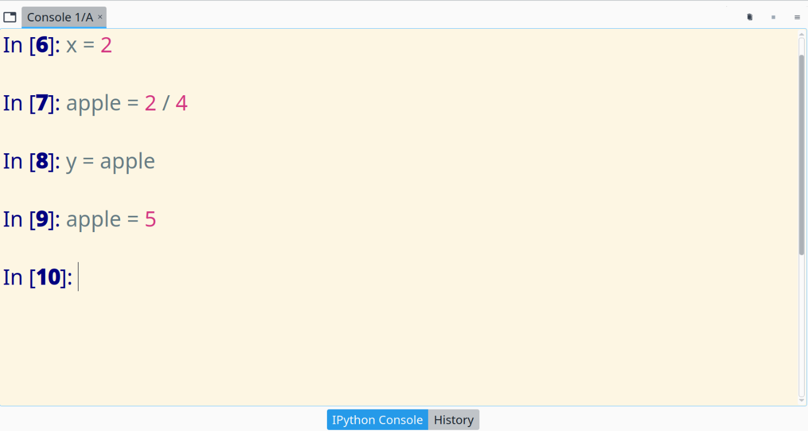
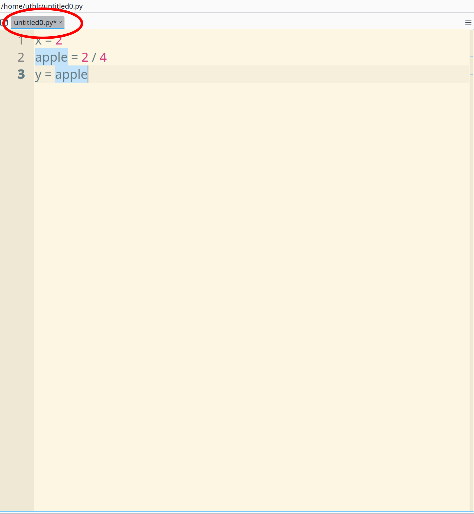
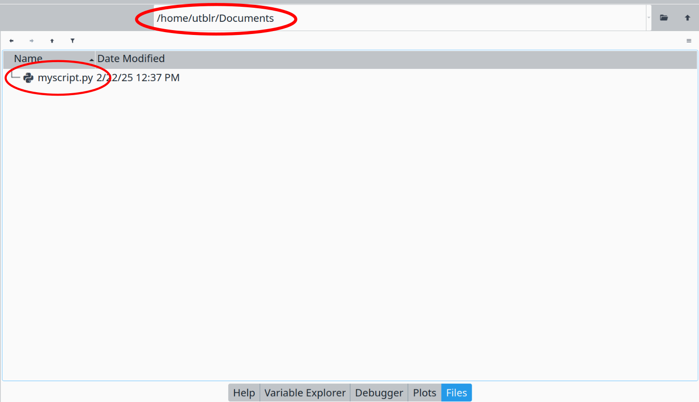
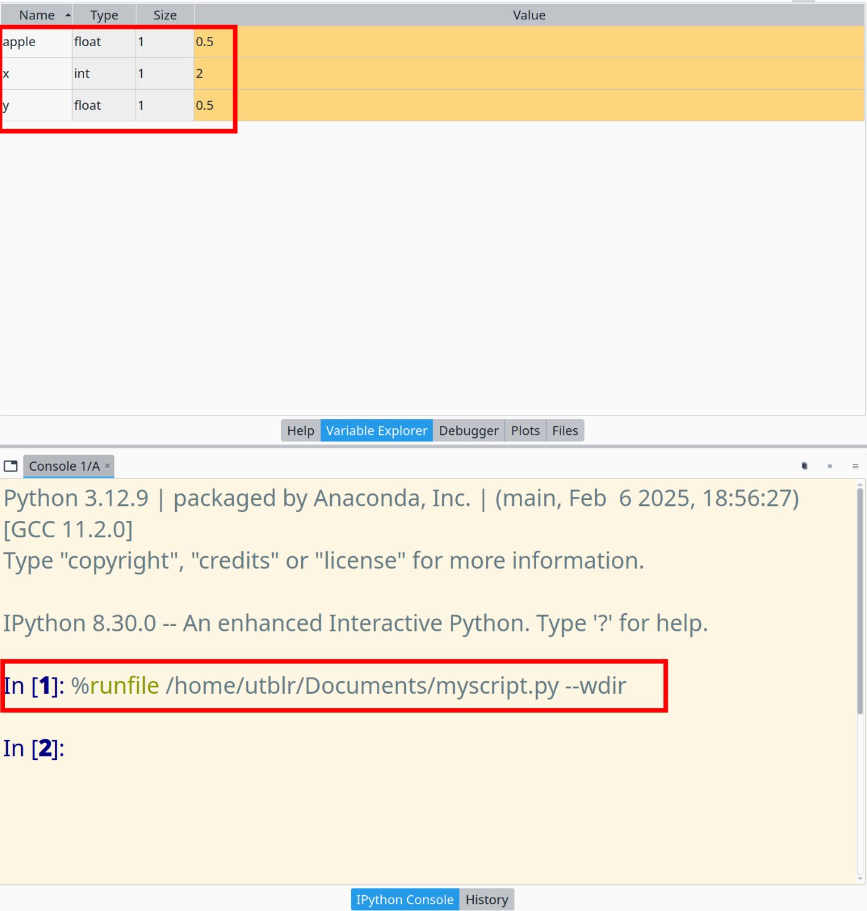
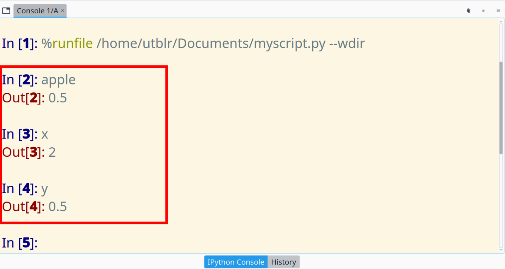

Arithmetic operations

Variable definitions

Check the variable explorer:

What is the value of y after execution of the commands shown in the console?

Instead of writing code in the console, let's create a script file which contains the same code in the console.
File/New file button on the top menu bar to write a new script fileuntitled0.py* will be opened. Notice that
untitled0.py is the script name.py is the file extension which represents the file type* appears when the file is not saved after any editing
File/Save button to save it in a folder which is tracked by you
/home/utblr/Documents is the working foldermyscript.py is the saved script
Press the play button or F5 key on the keyboard
Check

The variables can be accessed through the console
